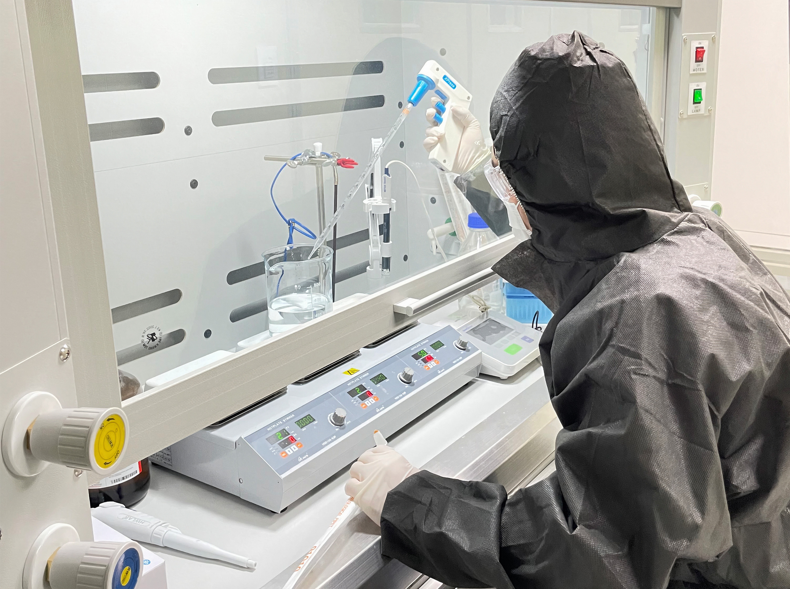
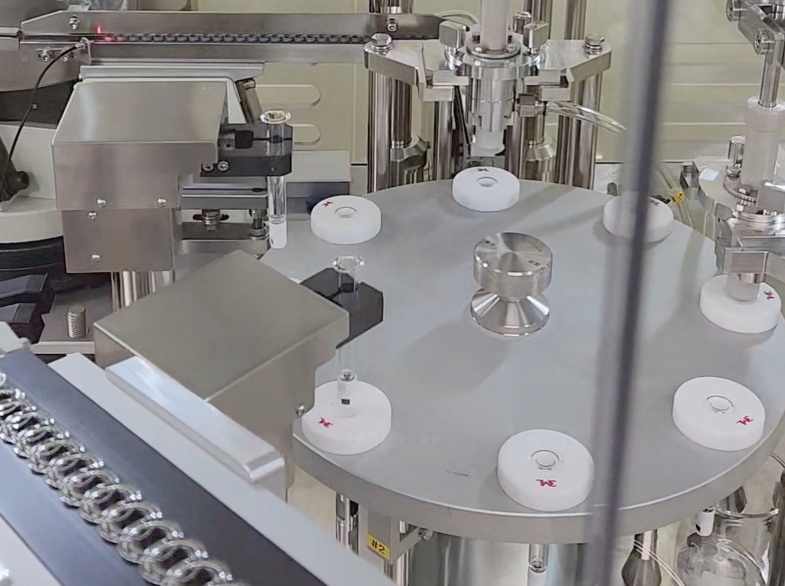

PN · 30 mg
The e-catalog describes the trout source used for the PN material.
AESTYVE / Combined PN and HA formulation
One syringe contains polynucleotide (PN) and hyaluronic acid (HA). Explore the composition, source and quality documentation.
Formulation
The e-catalog describes the trout source used for the PN material.
Hyaluronic acid is a water-binding polymer. The stated amount is per syringe.
A prefilled syringe contains both PN and HA. Each box contains one syringe.
Product Dossier


Brand-supplied specifications. Verify against the current supply label and specification sheet.
Quality & documents
The e-catalog describes the trout source used for the PN material.

PN is extracted and purified from the trout-derived material.

Formulation is followed by syringe filling and packaging.
Farm, workplace and equipment photographs officially published by the manufacturing partner. They do not document a specific Revibe production lot.
We review raw-material and finished-product documentation according to the product’s characteristics and applicable specifications.
Material identity, composition, concentration, pH and product-specific physical specifications
Applicable sterility or microbial, endotoxin and residual-substance test parameters
Lot number, expiry, fill volume, package integrity and storage conditions
For PN + HA products, we review ingredient identity, concentration, molecular-weight specifications and formulation-specific test records.
Test results and certifications apply to specified products, models, manufacturing sites or lots. Each document identifies its issuer, date and scope; raw-material and finished-product results are separate categories.
Applicable tests and documentation vary by product.
Check composition, ingredient amounts, fill volume, packaging and document version.
Review intended use, contraindications, precautions, storage and expiry.
Confirm availability of documents such as a COA, and check the applicable lot and test scope.
Verify the registration holder, covered product, issuing body and validity period.
We distinguish ingredient research from product-specific evidence.
Findings from PN studies cannot be directly applied as Revibe clinical outcomes. Consult the current instructions for use and a qualified healthcare professional when considering product suitability and treatment.
PN systematic review · 2025 ↗Both terms describe DNA-derived materials, but molecular weight distribution, composition and physical properties vary by product. Do not assume identical uses or effects; consult each product's specifications and IFU.
PN 30 mg and HA 10 mg are the ingredient amounts in one 2.0 mL syringe. Before a final order, compare the latest finished-product specifications with the actual supply label. Ingredient amounts alone cannot establish clinical superiority over another product.
No. PN literature is provided for ingredient understanding. Formulations, study populations and assessment methods vary, so these studies should not be read as Revibe-specific clinical trials or a guarantee of equivalent effects.
Sale and use depend on local product registration, import requirements and authorized intended use. Verify these against the destination country and importing entity. Publication of this page does not establish local authorization to supply.
Include your target country, quantity, planned start date and delivery destination. Availability and a quotation must be confirmed for your circumstances.
Start with current specifications, IFU and labeling. Quality, test and registration documents may also be requested according to local requirements. Confirm each document's availability, applicable product or lot, and validity.
Use the current label and IFU of the actual supplied product. Before ordering, agree on the expiry of incoming stock, transport conditions and packaging checks on receipt.
Contact the treating healthcare professional about treatment-related symptoms. For product quality questions, provide the supplier with the product name, lot, expiry and packaging condition. Do not include patient personal information or medical photographs in a general inquiry.
Clinic procurement and distribution require different information. Include the following details with your inquiry.
Review begins with the country of use, clinic details, required quantity and target start date.
Review begins with the target market, import and distribution qualifications, sales channels and expected order plan.
Request a quote based on quantity, country and commercial terms
Confirm availability and local import requirements
Confirm stock, production, customs and transport conditions
Confirm scope, minimum quantity and registration implications
These items are subject to discussion. Pricing, MOQ, lead times, exclusivity and customization are governed by the final quotation and agreement.
AESTYVE / REVIBE PN